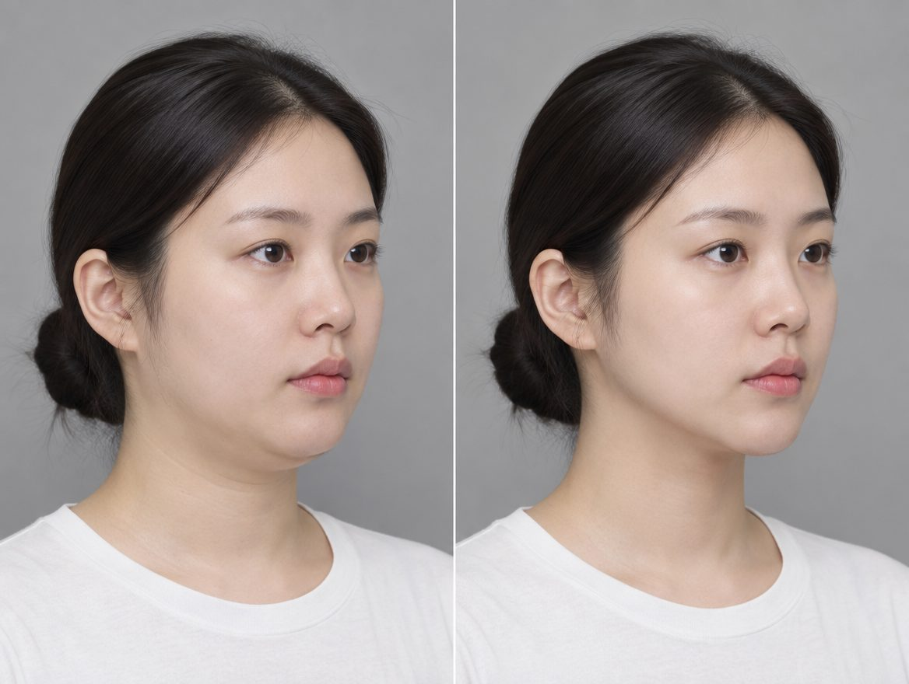
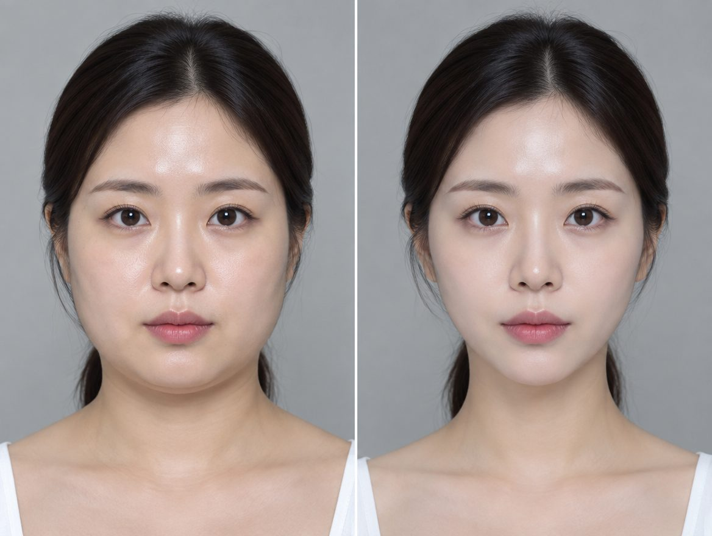
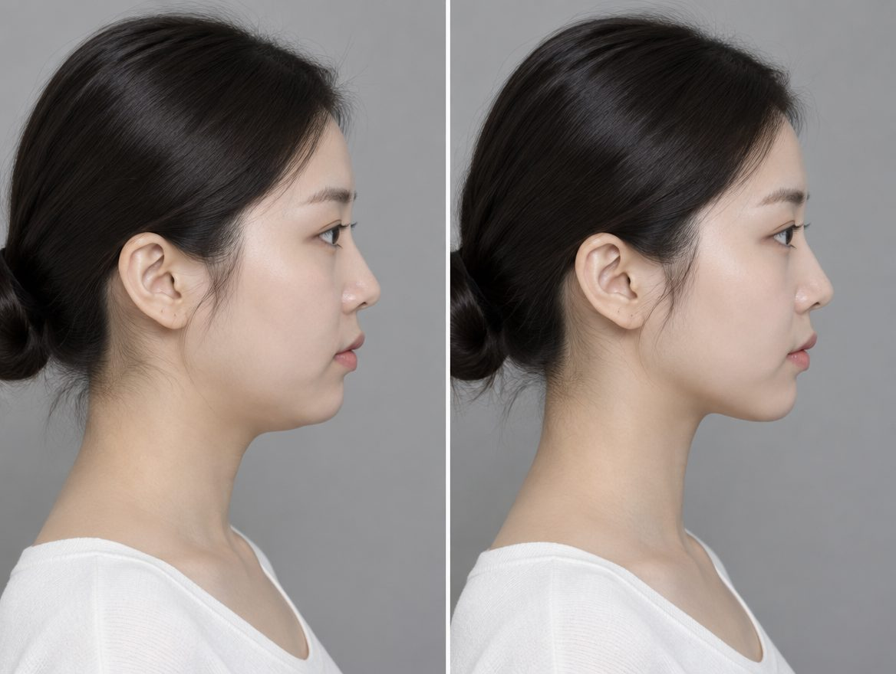
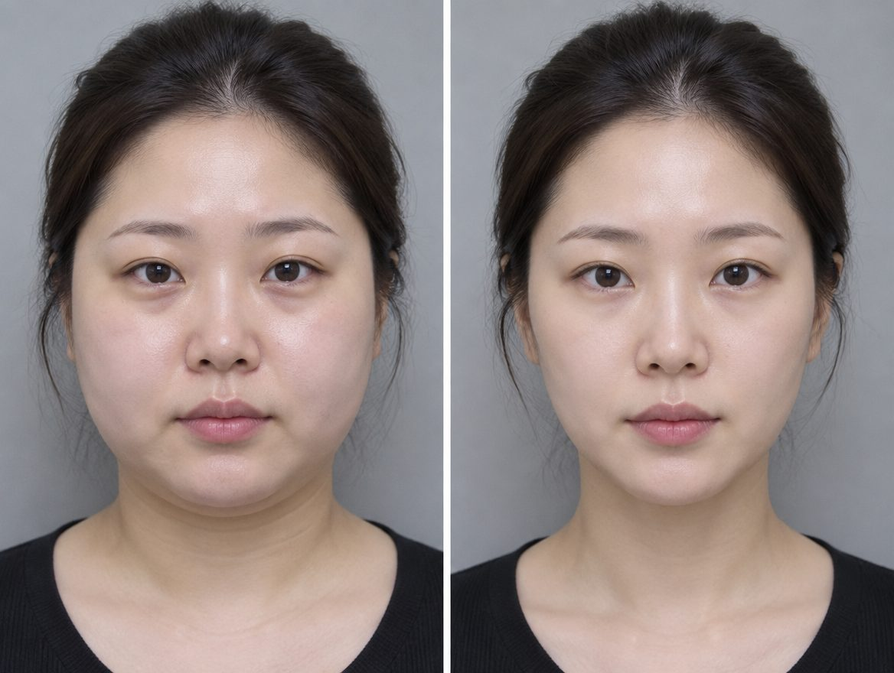
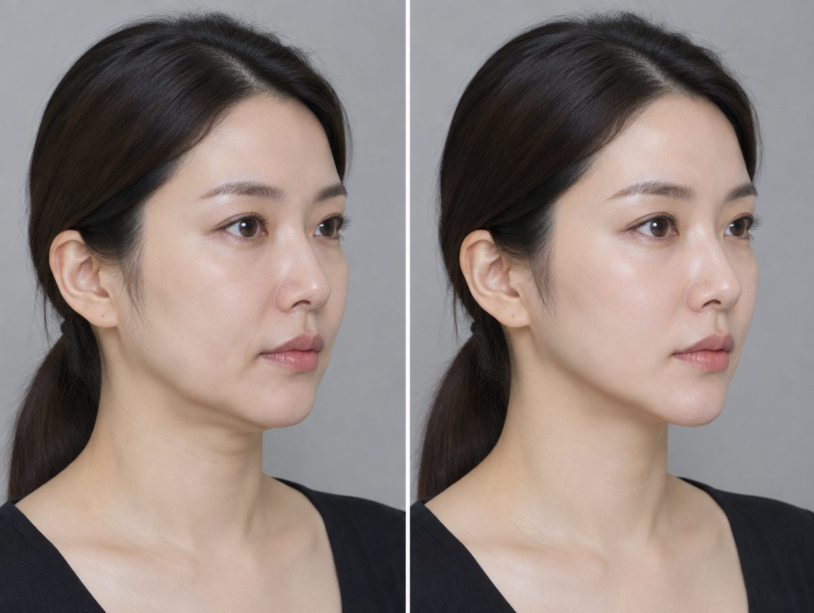
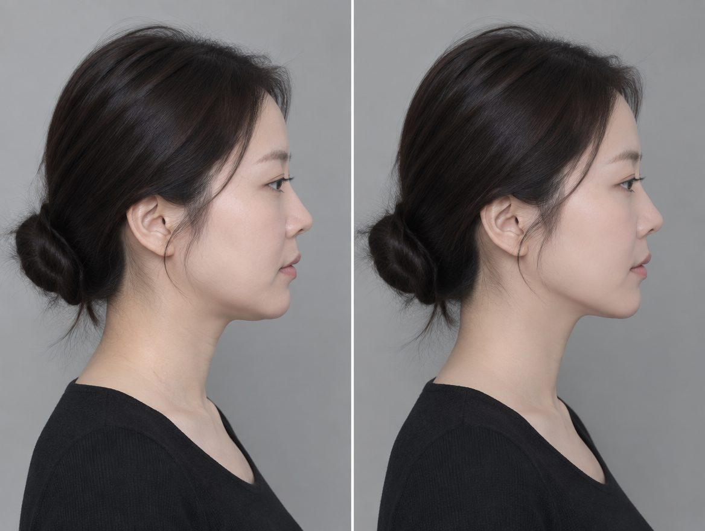
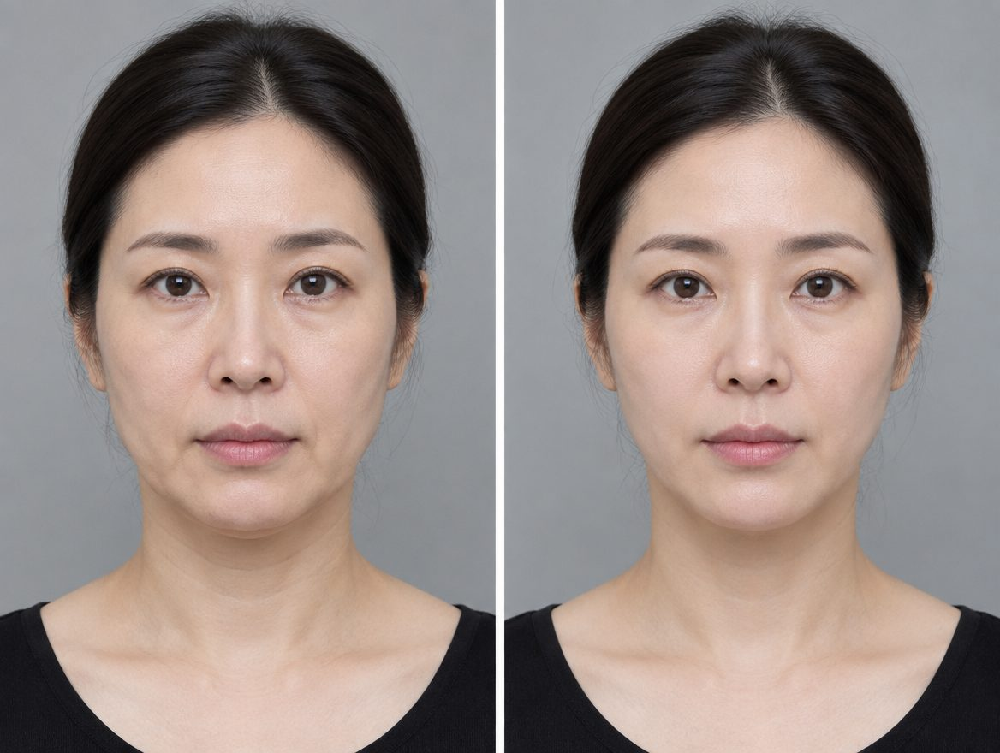
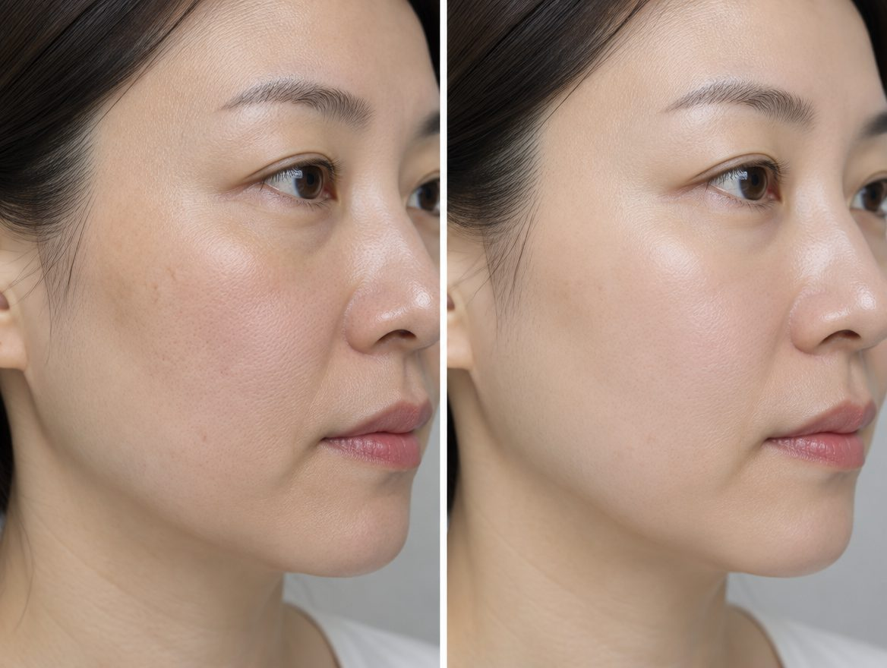
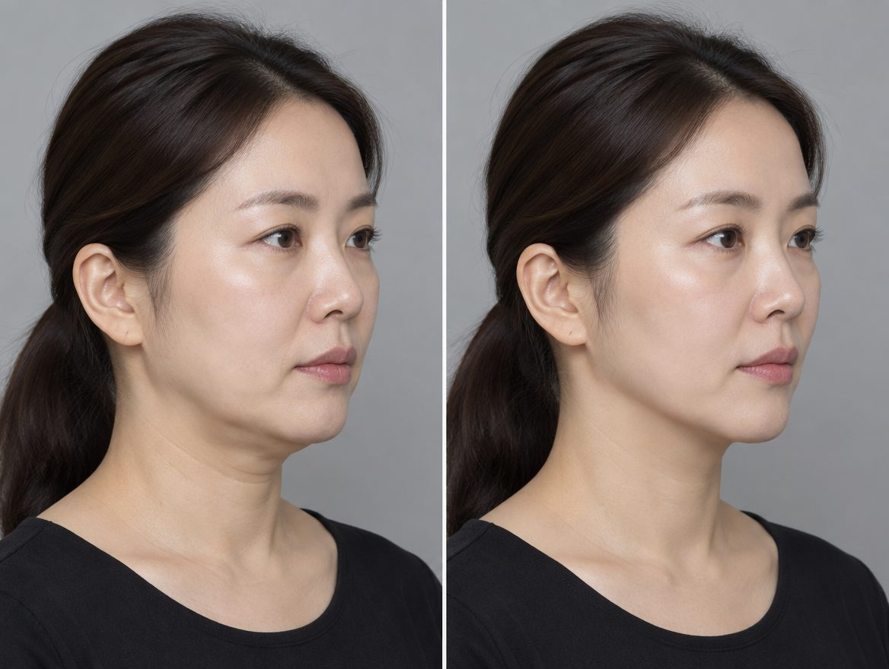

TYPE 01 · 20~30대
TYPE 01 · 20~30대
얼굴선을 또렷하게
잡고 싶은 분
- 셀카 각도를 늘 위에서만 찍는다
- 살은 빠졌는데 턱 밑은 그대로다
- 옆모습 사진이 제일 신경 쓰인다

FACE LINE LIFTING · CHEONGDAM
윤곽은 올리고, 부기는 정리하는 두 가지 코스.
성형외과 전문의가 얼굴 구조를 보고 정합니다.
WHO NEEDS IT
TYPE 01 · 20~30대
 TYPE 02 · 중요한 날 준비
TYPE 02 · 중요한 날 준비
 TYPE 03 · 30~40대
TYPE 03 · 30~40대
30-SECOND CHECK
결과를 카톡으로 보내주시면 상담이 바로 이어집니다.
HOW IT WORKS
피부는 겉에서부터 표피 · 진피 · 지방층 · 근막층으로 나뉩니다. 장비마다 에너지가 닿는 층과 방식이 다릅니다.
전자레인지처럼 물 분자를 진동시켜 속에서 열을 만듭니다.
파장이 길수록 깊이 들어갑니다. 4개 파장을 층마다 나눠 씁니다.
고주파(RF)가 깊은 층을 데우고, 저주파(LF)가 순환을 돕습니다.
왜 두 개를 함께 받나요?
파인웨이브·포트라는 탄력과 윤곽을 올리는 역할, 파셀라는 부기와 라인을 정리하는 역할입니다. 한쪽만 받으면 선이 서지 않거나 부기가 남습니다. [확인필요] 원장 추천 이유 1~2줄
효과와 유지 기간은 개인에 따라 다릅니다. 시술 가능 여부는 진료 후 결정합니다.
DOCTOR
대표원장 최민석 · 성형외과 전문의
[확인필요] 학력 · 수련병원 · 학회 활동 3~5줄
출처: VC성형외과 홈페이지 소개

SPACE
대기 · 상담 · 시술 · 회복이 한 공간에서 이어집니다. 다른 분과 마주칠 일이 없습니다.
AFTER CARE
20년을 이어온 에스테틱이 같은 공간에 있어, 병원을 옮겨 다닐 필요가 없습니다.

CASES









개인에 따라 결과가 다를 수 있습니다. 실제 오픈 시 동의받은 병원 사진만 사용합니다.
YOUR D-DAY
날짜를 넣으면 지금 시작해도 되는지 알려드려요.
코스 시작 권장
[확인필요]얼굴선 점검
[확인필요]가능 여부는 상담으로
[확인필요]PRICE
정상가 000,000원000,000원
[확인필요] 가격
정상가 000,000원000,000원
[확인필요] 가격
부가세 포함 여부 · 이벤트 기간 · 조건 [확인필요]
FAQ
[확인필요] 병원 답변
[확인필요] 병원 답변
[확인필요] 병원 답변
[확인필요] 병원 답변
턱선·부피감이 고민이면 라인 정리, 탄력과 피부결을 함께 보고 싶다면 탄력·결 코스를 권합니다. 최종 선택은 상담에서 얼굴을 보고 정합니다.
정면·옆모습 사진과 원하는 날짜를 카톡으로 남기시면 맞는 코스와 시기를 안내드립니다.
카톡으로 사진 상담 VC성형외과 · 서울 강남구 압구정로80길 31 (청담동)